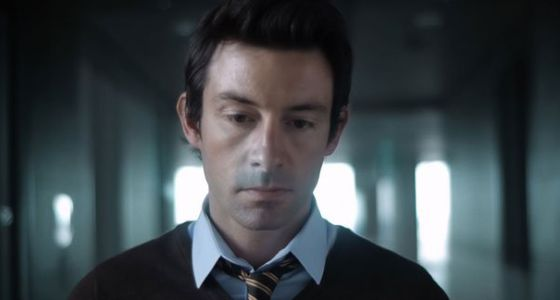
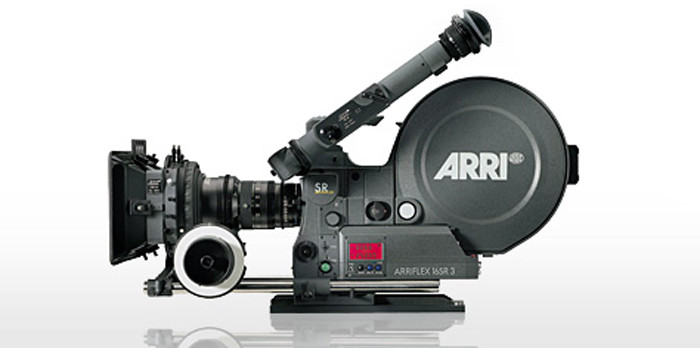
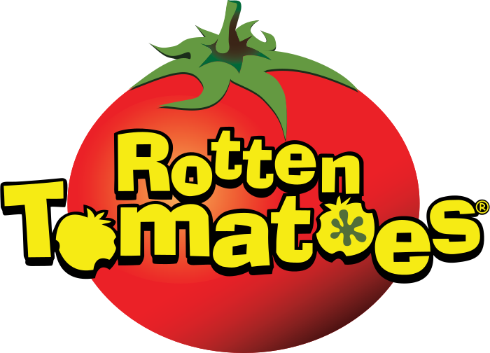

Como se hizo
-
Shane carruth
El director/protagonista de primerShane Carruth, la mente que dirigió Primer junto con un matemático y un ingeniero. Además, en su papel de protagonista es facil ver su motivación tras este proyecto.
 Wikipedia -
Producción
No todo fue sencilloPrimer fue filmado durante cinco semanas en las afueras de Dallas (Texas). El presupuesto de la película fue de solo US$ 7.000 y el equipo de producción consistió de sólo 5 personas. Shane Carruth no sólo escribió y dirigió la película, sino que también la editó, realizó el montaje y compuso la música. También protagonizó el filme como Aaron y muchos de los personajes fueron interpretados por familiares y amigos. El bajo presupuesto obligó a Carruth a usar película de 16 mm. Asimismo, para evitar desperdiciar tomas, cada escena fue cuidadosamente planeada en un storyboard de 35 pulgadas. Para darle una apariencia distintiva al filme, Carruth usó iluminación fluorescente, temperaturas de color no neutrales, película de alta velocidad y filtros. Después de la filmación, Carruth pasó dos años postproduciendo Primer. En varias ocasiones, Carruth ha expresado que la experiencia fue tan dura que casi abandonó el proyecto.
camara de 16mm
Wikipedia
-
Premios
-
Festival de cine de Sundance
premio "Gran jurado" y premio a la mejor pelicula tratando con ciencia y tecnología -
Festival de cine de Nantucket
Premio al mejor actor/director -
Festival internacional de ciencia ficcion de Londres.
Premio a la mejor pelicula
-
-
La critica
-

Filmaffinity
"Hipnótica ópera prima de un absoluto superdotado. Artilugio de envidiable eficacia que mantiene siempre en vilo al público." -

Rotten Tomatoes
"Scary, puzzling, and different." -

IMDB
"If you like Sci-fi, this will like you" -

Metacritic
It's maddening, fascinating and completly successful
-
-
Bibliografía
-
wikipedia.org
Para obtener toda la informacion acerca de los actores/directores de la pelicula, asi como información extra de la produccion de esta y premios obtenidos -
brackets.io
IDE que he usado para la creación de esta pagina web, que permite una vista previa dinamica de los documentos .html y los .css -
stackOverflow.com
Para obtener ayuda cuando me he quedado atascado en el diseño web -
stackOverflow.com
Para obtener ayuda cuando me he quedado atascado en el diseño web
-